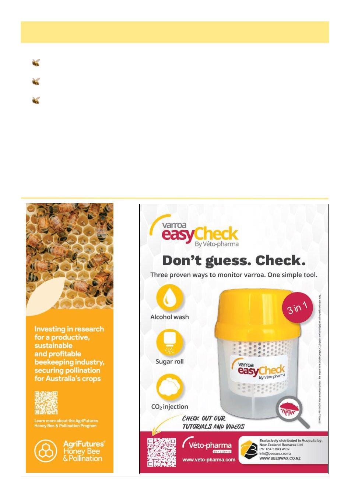

20
Australian Bee Journal
Facebook Roundup, May 2026, cont’d
Avoid overreliance on synthetics before re-
sistance establishes
Use Formic Pro sparingly and carefully - it can
knock colonies around hard
Preserve survivor genetics before the invasion
wave peaks
One of the biggest mistakes I believe Australia is
making is assuming overseas management models di-
rectly translate to our conditions.
What we appear to be dealing with in Queensland is:
• resistant mites,
• continuous reinvasion,
• rapid brood infestation,
•
and virus-driven collapse dynamics.
By the time you start seeing widespread collapse
across an area, you are already behind.
I genuinely hope Victoria‘s cooler winters buy you
time.
Use it wisely.
Good luck out there everyone. 5
1 Min Fuller in Commercial Beekeeping Australia
2026-05-21
-
https://www.facebook.com/
groups/230845533992673/posts/2473594596384411/
2 Min Fuller in Commercial Beekeeping Australia
2026-05-22
-
https://www.facebook.com/
groups/230845533992673/posts/2474402722970265/
3 Min Fuller in Commercial Beekeeping Australia
2026-05-27
-
https://www.facebook.com/
groups/230845533992673/posts/2479128275831043/
4 Anita Long in Commercial Beekeeping Australia
2026-05-28
https://www.facebook.com/
groups/230845533992673/posts/2479737819103422/
5 Corinne Jordan in Beekeeping Victoria (Australia)
2026-05-18
-
https://www.facebook.com/
groups/1734315350183239/posts/4447850695496344/
(Continued from page 18)